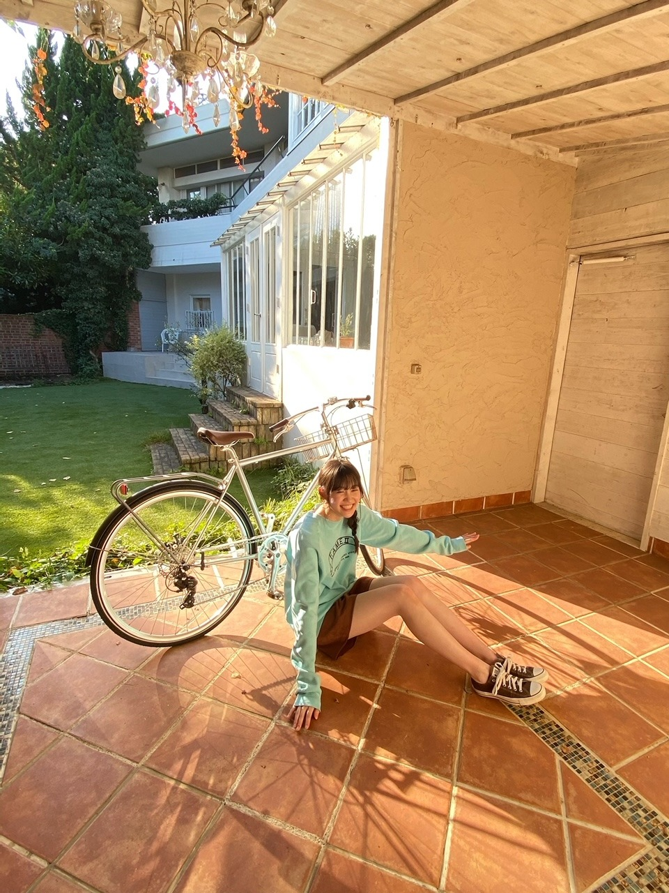
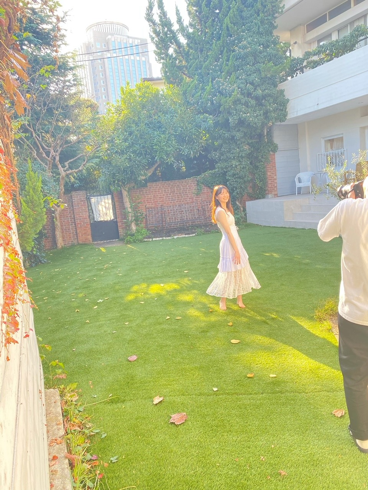
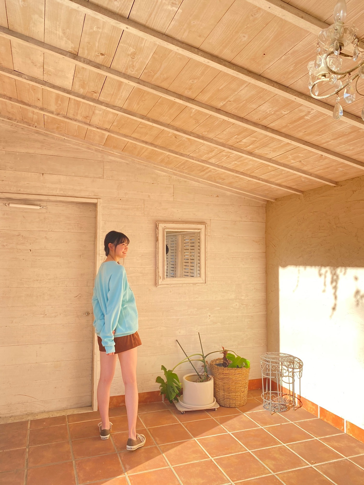
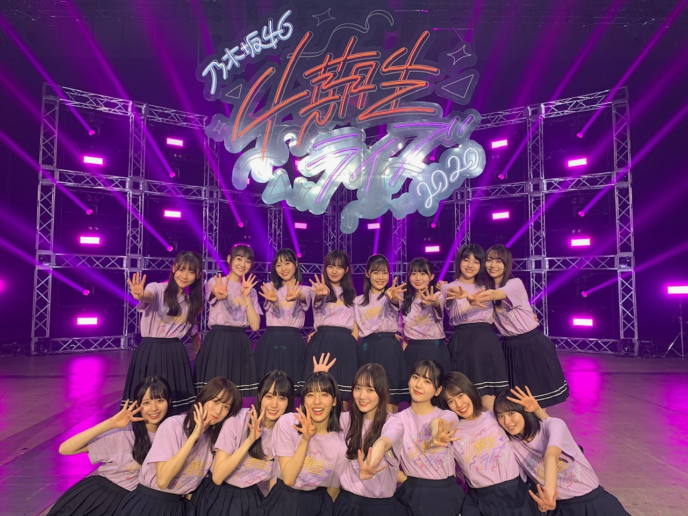

2020/1216Wed光 松尾美佑
寒いですね
でも太陽が元気で良いですね╭│ᵕ̈│╯
千葉県出身
高校2年生
16歳の
松尾美佑です
まつおみゆです
╭│ᵕ̈│╯╭│ᵕ̈│╯╭│ᵕ̈│╯
皆さんクリスマスツリー飾りました？
松尾家では、まみーこと母が1人で飾ってくれていました☀︎
今年ももうすぐ終わっちゃうなんて
信じられないですほんと
はやいはやい
┏|∵|┛
現在発売中のヤングマガジンさんに
新4期生5人が掲載させて頂いています！
オフショットです¨̮



すっごく太陽が綺麗な日でした〜ˊᵕˋ
私は水色でした♪
是非見てみて下さい!!
そして、
レコメン！さん、ありがとうございました！
のりさん本当に優しいお方で、レイちゃんと柚菜ちゃんとも楽しくお話出来て幸せな時間でした！
収録が終わったあとに木の椅子にサインをさせて頂いたのですが、
これまで出演された方々のお名前があって、そこに自分もサインをさせて頂けて本当に嬉しかったです！
ありがとうございました！
⸜（⍥）⸝♡
最近特に理由は無いんですが
やたらノートを買ってしまいます。
鍵がついているのがお気に入りです。
書くことはないんですけど、本みたいなノートが大好きで集めちゃいます。
何書いたらいいですかね
やっぱり夢とか書いたら素敵なんでしょうか
あとペンもやたらと集めちゃうんです
色付きの。
蛍光ペンの形をしてる、でも蛍光してない色
グレーがお気に入りです( ఠ͜ఠ )
小学生の時はやたらと付箋を集めていました
使わないのにね
今は使いますけど。
将来のために集めてたと思えばいいですかね
あ！！！！
携帯、新しくなりました！
自由に文字が打ち放題です！！
これで安心です
絶対画面割らないぞ。
強い気持ちでこの子と生きていきます。
前回のブログの1枚目の写真、
見えていなかったみたいで。
今度こそ！！

見えますかね( ㆀ)？
好きな写真〜⸜❤︎⸝
お返事もまた今度ゆっくり出来たらいいなと思ってます(*ˊᵕˋ*)
明日は〜
なお〜〜〜〜〜〜〜〜〜
可愛いトナカイのカチューシャを見つけてね、
すっっごい可愛いの。
ho-ho-ho-
手づくりクッキーと共にココアを置いておいてくれたら幸せを届けるよ
みゆサンタより
私は毎年サンタさんを追跡してます
楽しいので皆さんもやってみて下さい
去年は妖精語を習いました。
もう忘れちゃいました。
また勉強しなおします。
幸せだ〜の顔( ᵕᴗᵕ )
それでは！また5日後！
もう雪が降ってる地域もあるとか！
あったかくして下さい( ´͈ ᵕ `͈ )
ミュウでした¨̮
ばいっっっっっっ( Ꙭ )/''

PROFILE
新4期生リレー
202104
| SUN | MON | TUE | WED | THU | FRI | SAT |
|---|---|---|---|---|---|---|
| 1 | 2 | 3 | ||||
| 4 | 5 | 6 | 7 | 8 | 9 | 10 |
| 11 | 12 | 13 | 14 | 15 | 16 | 17 |
| 18 | 19 | 20 | 21 | 22 | 23 | 24 |
| 25 | 26 | 27 | 28 | 29 | 30 | |

コメント(212)
美佑ちゃんのブログ毎回楽しく読ませてもらってます。今日自分の誕生日なので、誕生日が近い日に更新されて嬉しいです！
ミーグリ当たったので初めましてするの楽しみです
群馬の みなかみで ２m の積雪
東京も 氷点下の気温を記録して
コロナも ８００人超え.. と
いろいろと 大変な １２月も 後半に
無事 健康に 紅白も 出演出来て
新しい年を 迎えられると いいですな 。。
昨夜の ＡＮＮで 生田氏が
新曲の歌詞を 朗読していて 味わい深かったが
おみゆも 声が 個性があって よいので
表題曲や 期生曲の 歌詞を 朗読してみては？
何度も何度も 繰り返して 感情表現を 深めるのも
良きかなと
寒いですね～本当に..(; ;)
クリスマスツリー飾ってるんだ♪
テンション上がるね＼(^o^)／
携帯も新しくなって良きですね✨
4期生の写真、私も好きです◎
ミュウちゃん、足長いなぁ！
幸せだ～！のお顔も可愛い(*^^*)
体調には気をつけて過ごしてね
寒いので体調に気をつけて仕事頑張ってくださいねぇ。
これからもミュウちゃんをいっぱい応援してます。
オフショト、めっちゃ可愛いですねっ！
さわやかぁ～な雰囲気が良いですにゃ♪
というか書いてー
思うの。
やっぱりみゅうちゃんって
すっごく健康的だよね。
ーーーー
どんどん寒くなっていくけど風邪ひかないようにねーっ。
コメント遅くなりました笑
レコメン聞いたよ！のりさん本当に優しいよね！
またみゅーちゃんのラジオ出演楽しみにしてるよ！
僕も中学生の時やたらペン集めてたよ〜匂いが着く色ペンとかすごく好きだった！
てか携帯変えたのいいな！！！この前フィルム割れてそのまんまだよ…笑
てか早くミューちゃんとミーグリでお話がしたいです！めっちゃ楽しみです！なんかあだ名つけて下さい
最後に質問
・毎年、年を越す瞬間にすることとかあるー？
よろしく！
写真みれたよー
ヤンマガのグラビアチェックしナイト(☆｡☆)
ミュウちゃん足長い！
クリスマスツリー飾ったんだね♪まみーに感謝！
ツリーはないけど玄関にリースを飾ってるよ。
魔除けになるんだとか。
飾ってる本人が悪魔じゃって！？(ΦωΦ)ﾌﾌﾌ…
(ひとりのりツッコミ。。。)
うんうん、ノートは買いがち。
僕も使ってないノートが引き出しにいくつかあるよ。
ペンもノートも書くことが見つかると
きっと幸せ増し増しなんだろうね～
携帯が新しくなったんだね！おめでとうヽ(^0^)ノ
これで思わぬ入力の邪魔もなくなったわけね。
妖精語、ビギナーコースを受講させてください。
ミュウ先生！(^o^)／
最後の幸せの顔の写真が可愛くてキュンキュンきたんじゃ。
ありがとう。やっぱりミュウちゃんの口角美しい♪
なかなかな寒波ちゃんが来てるから
体調にはきをつけてね～
クリスマスまであと1週間だ！
そしてそしてオフショットもありがとう！
とても可愛いですね！
サンタ追跡是非一緒にしよう〜（笑）
またね！
遅くなりました～
ブログいつもありがとうございます。
美佑ちゃんは水色似合いますね～
とっても素敵です！
レコメン聞いてたよ～
というか、4期生ゲスト回全部聞いた！
あの椅子、錚々たるメンバでしたね。。
お！携帯新しくしたんだね！
おめでとうございます！
今度は落とさないようにねｗ
あ～スキッツ見ました！
未公開もｗ
美佑ちゃんめっちゃ踊り狂ってて笑ったｗ
単純にいっぱい写ってると嬉しいものです。
それではまた５日後です！
5日後のブログ待ちきれずまたコメントしに来ましたー！！
急に寒くなったけどみゆちゃん風邪ひいてないかな？！
明日からアンダラだねー。観に行くのかな？？
わたしは仕事なので行けないんだけど、きっとみゆちゃんから見ても勉強になることが沢山なんだろうな〜たくさん吸収してね！
質問またさせてもらうね！
◯4期生ライブで一番テンション上がった曲は？？
またコメントしに来まーす！！
おもちより
ノートやたらと買っちゃいます！ペンも！ボールペンとか。
文具館何時間もおれますもん。
ノートは毎日文字書いてるよ〜。気持ちが落ちつくしイイよ！
レイ┏○ﾍﾟｺｯ。
みんなのダンスがかっこいいし可愛かったな〜！
最近寒いね～
体調崩さないように気を付けてね！
オフショット可愛い
水色も似合ってる！
4期ライブに居たサンタさん、また来て欲しい笑
次の更新楽しみにしてますー！
今日は遅コメです。
ノギザカスキッツ、遅くなったけど見ましたよ！
「しりとれ！HIP CATCH PARTY」出ていましたね！
ピンクと黒でまとめた服とリボン、めっちゃ可愛くてオシャレだな〜って見てました。
あれはミュウちゃんの私服ですか？
そうならやっぱりミュウちゃん、センスいいですね〜！
しりとりでは、セクシーな「りんご」とセクシーな「ねこ」をなんなく答えていましたね！
答え終わったあとの恥ずかしがっているところも可愛かったです。
できれば、アウトの罰ダンスも見てみたかったですが、次回の楽しみにしまっておきますね！
それと、次週の予告「かつ屋のクリスマスバージョン」にミュウちゃんの姿がありましたよ！
マスクしていたので分かりにくいけど、あれはミュウちゃんに間違いないはず！
めっちゃ楽しみです！
奈於ちゃんがブログで「トナカイのカチューシャ被った姿早く見せてね」と書いてくれてましたよ！
これは期待してもいいのかな？
こちらも楽しみに待ってます！
それではまたコメントするね。
ミュウちゃんにとって明日がいい日になりますように！ (^.^)/~~~
寒いですね〜寒すぎですね〜笑
バイトは夜だから太陽の出ていない時間に自転車漕ぐのがめっちゃ辛い今日この頃。。
もう今年終わっちゃうんだね〜毎月、今月はミュウちゃんのブログの日は〇日と〇日だ！って考えてると一瞬で次の月に進んでしまうんですよね〜時間を早く感じてしまうのは新しい発見が減ってるからって聞いたことがあるよ！大人になってる証拠かもね笑
オフショットのミュウちゃん天使かな？
可愛いし、足長くて本物のモデルさんみたい！水色も白もよく似合ってるよ！
携帯復活おめでとう！俺はまだ画面割れたことないけど、俺も割らないように、お互い頑張ろうね！
4期生ライブの写真見えてるよ〜！
他の期ももちろん仲良しなんだけど、4期生の若さ溢れる仲良し感が見ててなんとも微笑ましい！めっちゃいい写真やね！
質問
僕はクッキーを作る技能は無いので、ココアと共にゆなちゃんの生写真を置いておこうと思うのですが、幸せ届けてくれますか？
週末はアンダーライブを見るよ〜ミュウちゃんは見るのかな？
てことで、風邪引かないようにね！
では、次のブログも楽しみにしてるね！
じゃ、また(`ω´*)
オッハーーー！
今朝はめちゃ寒々だよー
でも今日から少し寒いの
おさまるらしいよー
今日は１週間のラストデー
テンション上げて頑張るぞーー！！
幸せだ～の写真はこっちも幸せになる笑顔(^∇^)
ケータイ新しく変えたんだね！だいちゃりも新しいの欲しいって思ってるんだけど今のケータイ壊れたわけじゃないから変えるのいつになる事やら…(笑)
サンタさん追跡とかすごく面白そうな事やってるね！妖精語めっちゃ気になるから勉強してまた覚えたら教えて欲しいな(笑)
質問します↓↓
･雲に乗って空を散歩するか、虹の端から端までを歩いて渡るならどっちを選ぶ？
･2020年もう少しで終わっちゃうけどやり残したことはありませんか？
･茨城県の印象があれば教えて下さい！
さて、今日もお仕事頑張ってきますかね。。。美佑ちゃんも体調には気をつけて今日も一日頑張ろうね！
それじゃまたコメントするね〜！ばいっっっ！
こんにちは☁/☀
今日も頑張って行きましょう
今日は昨日より寒くはないですが油断せずに防寒対策きちんとして行きましょうね
昨日の夕方に関東で地震があったみたいだけどミュウちゃんの所は大丈夫だったかな？
最近、地震多いような気がするけどねぇ
今日からいよいよアンダーライブ2020が始まりますね。
新型コロナが流行しだして初めて有観客でのライブになりました。
東京の感染者が昨日で800人出た中で有観客でライブやるのは厳しいと自分は思ってますがやるからにはみんながちゃんと感染対策やルールやマナーをきちんと守りライブが大成功となる事を祈ってます。
神社でアンダーライブ2020の成功を祈願してきました
自分も画面越しでたくさん応援しますよ
今日もミュウちゃんにとって素敵な一日となる事を願ってます
夜にでもブログの感想書くね
読んでくれてありがとう(*´ω｀*)
バイバイ
#今日のおすすめ曲
#乃木坂46
#別れ際、もっと好きになる
撮影してる美佑ちゃん楽しそうですごく可愛いからオフショット嬉しい
スマホ新しくなってよかったね！
私も蛍光してない蛍光ペン好きだよ☺︎ 薄紫愛用してる
私も小さい頃サンタ追跡見てたなぁ懐かしい
日本に近くなってきたら急いで布団に入ってた笑
┈┈┈┈┈┈┈┈┈┈┈┈┈┈┈┈┈┈┈┈
~質問~
・美佑ちゃんは雪が積もったら外で遊ぶ派？それとも家で暖かくしてる派？
・松尾家には美佑ちゃんの生写真ってあるの~？
┈┈┈┈┈┈┈┈┈┈┈┈┈┈┈┈┈┈┈┈
寒くなってきたから体調に気をつけてね
今日もお疲れ様でした(≧▽≦)
まだクリスマスツリーを飾ってない高橋です笑
お母様がお一人で飾ったんですか
お疲れ様です笑
今日も寒かった寒かった(｡•́︿•̀｡)
ミュウちゃんは最近やたらとノート買うんですね
鍵のついたノートとはなんですか？？
本みたいなノートに色付きのペンを集め付箋を集めてたミュウちゃん
ミュウちゃんらしいお話しでホッコリしました
なんでもポジティブに考えて行きましょう笑
携帯新しくなったんだね
良かった良かった
自分も秋に携帯変えたけどあの時はマジでヤバかったな
今は快適にルンルン気分で携帯触ってます笑
ミュウちゃん写真ありがとう(*´ω｀*)
前回のブログで一枚目の写真開かなくてどんな写真かと思ったけどこの写真だったんですね(≧▽≦)
はい、ちゃんと見えてますよ
自分もこの写真大好きですよ笑
みんな4本指だけどミュウちゃんとゆりちゃんはダブルで4本
指になってるね
だいすこ(◠‿・)—☆
と言う事は16✕4＋12=76ですね（なんの計算やねん笑）
よく見るとかしこるなぴとゆみっきーはカップルみたいでラブラブですね
ラブラブ感が半端ないんですが
ゆみっきーがるなぴの肩を抱いてるなぴがゆみっきーの腰を抱いてる
頭も手もお互いつけてますし二人付き合ってんじゃないかと思うぐらいラブラブですね笑
真佑ちゃんもせーらちゃんの頭に4本指を立ててるしなんかせーらちゃん兜付けてるみたいだな〜笑
やっぱ乃木坂だな〜(◍•ᴗ•◍)
最高の写真ありがとう(≧▽≦)
コメント長くなるけんまた書くね
ではでは
いったんドロンします
ノート良いですね。私はツバメノートが大好きです。ツバメノートに万年筆✒最高です。
ノギザカスキッツ毎週観てます。
質問
得意な教科は何ですか？私は数学ですが、知りたいです。
体調崩されないよう、お体大切にしてください。
肌が弱いのでこの季節になると手がガサガサになります笑
ぴえん
この季節はニベアが必需品ですね
昔からニベアよく使ってて欠かせないです笑
ニベア有能(✿^‿^)
え、ミュウちゃん
可愛いトナカイのカチューシャを見つけたんだ(≧▽≦)
ゆみっきーがトナカイのカチューシャ被った姿早く見たいと言ってたので是非お願いしますね笑
カワイイだろうな
カチューシャと聞くとなぜかAKBのEveryday、カチューシャを聴きたくなるのは自分だけですかね。
Everyday, Everyday, Everyday
カチューシャガール
毎年サンタを追跡してるんだね
楽しそうだけどやり方を教えて下さい？？
サンタさん追跡したいんです
最後に質問しますね
Q.松尾家はイルミネーション点灯しました？
Q.妖精語を学ぶテキストはありますか？
Q.スキー旅行した事ありますか？
Q.黒サンタと緑サンタどっちが好きですか？
Q.まるちゃんやきなこちゃんの近況を教えて？
Q.体操でやってみたい競技ありますか？
以上です
どれか答えてくれたら嬉しいです
またコメントするね
読んでくれてありがとう(*´ω｀*)
今回も楽しくてカワイイブログをありがとう
バイバイ
ミュウちゃんが
『幸せだ～』だと
俺らはもっともっと
『幸せ』っすヽ(´▽`)/
では
2度目のコメントです〜！！
携帯新しくしたんだね！落とさないように気をつけてね(´ｰ｀)
バンカーリング付けるのオススメだよ〜！！
今週のノギスキ見たよ！Huluのマチソワカンの方も
美佑ちゃんしりとり弱いんだね(笑)
そんなところも可愛いよ⊂( ⊂ _ω_ )⊃
サンタさんが今年も美佑ちゃんの元に来ますように！
ではでは〜おやすミュウ！
今日は遅コメです。
今日も寒かったですね！
でも昼間は日差しがあって、だんだん寒さも和らいでくれそうな感じがします。
雪の多いことろには、もうこれ以上降ってほしくないと願うばかりです。
それでは本題へ
今日、ミュウちゃんが届きましたーー！！
何かと言いますと…
注文していた『ハンドタオル』と『チェンジング缶バッジ』です！
Route 246バージョンのミュウちゃんがいましたよ！
まずハンドタオルの方ですが、衣装がめっちゃ似合ってて、とびきりのミュウスマイルとイヤリングが最高です！
とても素敵すぎて、とても使えそうにないので、観賞用として大切に保管します。
缶バッジは初めて購入したのですが、最初、『松尾美祐』の文字しか見えなくて、ミュウちゃんの写真はないのかな？って思ってたら、突然ミュウちゃんが登場してきてビックリ！
確かに“チェンジング”なので、当然と言えば当然なのですが、本当に油断してたので、一瞬ですが何が起こったのか理解できませんでした。
それからしばらく、缶バッジを斜めにしてミュウちゃんの顔を出しては、ひとりニヤニヤを繰り返していました。
ちょっと危ない人みたいですが、大丈夫ですよ！
それではまたコメントするね。
ミュウちゃんにとって明日がいい日になりますように！ (^.^)/~~~
チョコ生ケーキを望みましたが、妻の意見が優先され苺サンドショートに
松尾家は、苺のクリスマスタルトにお決まりでございますか┌iii┐
みゆスマイル、うさこあらさん、真新しい携帯さん、こんにちは❄❄❄
最近のミュウコレクションのお話から、ブログ更新をありがとうございます
前回ブログのお気に入り写真、拝見できないのは私だけかと思ってました
見ているこちらまで幸せだ～の自撮り、ぱりっと携帯さんが活躍中かしら
ヤングマガジンさん 第２・３合併号、若さ溢れるお嬢さまが載っています
5人の心境変化のそれぞれを興味深く拝読、来年の飛躍に期待↗
水色と言われて、衣装だけではない事に後から気づきました
眩しいオフショット、意識しない自然体に近いと思わせる笑顔が届きます
⑧好きなグラビアアイドル・・松尾美佑さんを もう一度見たい、と回答♫
みゆりんに、質問がございます
✽ 手先が器用そうですが、クリスマスカードを手作りなさいますか？
ノギザカスキッツ ACT2、 かつ家⛄スペシャル
次週にも出番が訪れたようですね、見せ場を想像しただけでドキドキ!!
私事で恐縮ですが、資格試験に無事に合格できました
スマイルガールズさんに勇気づけいただいたお蔭と感謝しています♪
それでは
こちらこそ、ばいっっっっっっ( Ꙭ )/''明後日（12/21）お会いしましょう
かわいらしい塗り絵、きらめくオーナメント、お受け取りになりましたか
大切な人とのクリスマスを楽しんでね、遠くても愛してるーッ♡
コメント遅れちゃった！！
ヤンマガオフショットいいね〜、こういうのがモバメで見れるようになればっていつも思ってる！まだかな〜
グレーの蛍光ペンわかる！使ってる！www
急に寒くなってきたから体調気をつけて！
短いけどまた5日後にオアイシマショウ
ぽぽぽ
オッハーーー！
今日はお寝坊だよー
でもお休みだからへっちゃら
やっぱりお休み最高！
今日はメガネ屋さんと車屋さんに行く予定だよー
また報告するね！
テンション上げて頑張るぞーー！！
こんにちは☀
今日も頑張って行きましょう
今日は福岡はそんなに寒くないけど風が強くて冷たい
しかし北日本では大雪みたいだし心配だな〜。
ミュウちゃん風邪ひかないように気をつけてね
体調管理きちんとして行きましょうね。
今は柏レイソルと川崎フロンターレの試合見てます
もちろんレイソルを応援してますよ笑
いや〜オルンガ選手凄いな
速いな
確かミュウちゃんのお母上はサッカー見るの好きなんですよね
サッカー面白い面白い
バスケも大好きだな
今日はアンダーライブ2020 2日目ですね(ㆁωㆁ)
今日もメチャクチャ楽しみだな〜
またコメントするね
今日もミュウちゃんにとって素敵な一日となる事を願ってますね
読んでくれてありがとう(*´ω｀*)
バイバイ
#今日のおすすめ曲
#乃木坂46
#滑走路
チャンスの瞬間は何度もあって
それに気付けるか気付けないか
そして気付けたときにそれを掴めるか
逃すことも悪いことばかりじゃなくて
次に掴むために何が必要かがわかる
それの繰り返しが自分を強くする
どうもどうも☺︎☺︎☺︎
マフラー解禁する瞬間、掴みました◎
ヤングマガジン、ゲットしましたー☺︎
オフショットを載せてくれてありがとう◎
お天気が良くて笑顔もキラキラしてて
眩しくて優しい空間を味わえたよ
何度も見返しちゃうお写真でした◎
レコメンもばっちり聴けました！
楽しそうな収録現場の風景が思い浮かんだよ☺︎
いつか生出演の日も来るかなぁ
美佑ちゃんがもう少し大人になって
夜のラジオとかに生出演できる日まで
楽しみに待ちながら応援しています◎
12月もまだまだ楽しく過ごそうね◎
またコメントします！
ミュウちゃんお疲れ様です！
ヤンマガもちろんチェックしましたヨ！
オフショットもいいですネ♪
紙面ではみられない無邪気な笑顔や表情がみれので(^^)
ミュウちゃんは本当に肌が白くて綺麗で足も長くてスタイルも良いなって、毎回思います！
まだまだ成長期だと思うけど、身長はまだまだ伸びてますか？
ノートって学生の頃はもちろん買ってたけど、社会人になってからは全然買ってないなぁ
夢を書いたり、日記にしてみたり、目標だったり、やりたいことを書くのもいいかもネ(^^)
あとは、「僕は僕を好きに」の歌詞のように、嬉しいことや楽しいこと、苦しいことや辛いことがあったら心に閉じ込めず、ノートに書いてみるのもいいかもヨ！
心を整理するのにも役立つかも(^^)
"妖精語"というものがかなり気になります！
サンタの言語は妖精語なんですか？
どこでどうやって勉強するんですか？
気になることがたくさんありますヨ！
ぜひ教えてほしいです(^^)
僕の地域は雪は2～3cmほどしか積もってないんですが、気温が…
毎日、しかも日中も氷点下の寒さなんです(><)
仕事で外で作業することも多く、しかも末端冷え性なので手足が凍える寒さ冷たさで、痛いと思うほどですヨ。
真冬だと-20℃以下になることもある地域なんです！
濡れたタオルを振り回せば凍る実験なんていつでも出来ます(^^)
ミュウちゃんは-20℃くらいの気温を体験したことありますか？
纏まりのない読みにくいコメントで申し訳ないです…
いつも応援してます！
今日も遅コメです。
今日は日差しもあって少しだけ寒さが和らいでくれていました。
久しぶりに綺麗な夕日も見ることが出来ましたよ！
ミュウちゃんのところはどうでしか？
明日はもっと暖かくなってくれるといいですね！
ヤングマガジンのオフショット、たくさん載せてくれてありがとうです。
どの写真も今回タイトルの『光』を感じさせる素敵な写真ですね！
ミュウちゃんの脚の長さとスタイルの良さに、改めて驚くばかりです。
外での撮影もあったんですね！
寒くなかったですか？
陽ざしがたっぷりで大丈夫だったですかね！？
ヤングマガジンの方も購入して、何回も見返していますよ！
ミュウちゃんのアップ写真に癒やされています。
水色のトレーナーも似合っていますよ！
この水色はミュウちゃんカラーの『ターコイズ』にも見えてくる素敵な色ですね！
自分で選んだのかな？
選んでもらったのなら、すごい偶然、いや必然、これも運命ですね！
最後に質問
○クリスマスの思い出と今年の予定は？
○ミュウちゃんの好きな野菜は何？
○セロリやパクチー食べれますか？
○牛肉、豚肉、鶏肉、どのお肉が一番好きですか？
○来年の抱負を一言！
それではまたコメントするね。
ミュウちゃんにとって明日がいい日になりますように！ (^.^)/~~~
オッハーーー！
今朝もめちゃ寒々だよー
それと昨日の報告するね
ついに車を買いましたー！
中古の軽自動車だけどワクワク！
届くまでに運転練習するよー
テンション上げて頑張るぞーー！！
こんにちは☀
今日も頑張って行きましょう
今日は快晴でポカポカしてます。
寒くないです
最近は寒い日が多くてコタツによく入ってますがよくうたた寝をしてしまいます＼(°o°)／
風邪ひかないように気をつけないと。
頑張りますね（なにを）
今日はアンダーライブ2020千秋楽ですね(◍•ᴗ•◍)
今日はアンダー楽曲30曲をノンストップで披露しますね。
盛り上がって行きましょう
アンダーライブも楽しみですが今日はガクたびもありますよね
前回は新オープニングの前編が流れてましたが今日はいよいよ後編が流れますね
そうなんです。
後編にはミュウちゃんが登場するんです。
元研修生で前編に出てたのはくろみんとるなぴなので今日はミュウちゃんとゆみっきーとりかちゃんがでますね
見たら確実に天に召されるので復活アイテムたくさん用意しておきますね（どういう事やねん）
まばたき厳禁で見ますね笑
今からワクワクドキドキ
最後に少し質問するね
Q.ミュウちゃんの得意な泳法ははなに？
Q.好きな鍋の具材ありますか？
Q.ミュウちゃんはよく夢を見ますか？
Q.ミュウちゃんは雪合戦した事あります？
以上です
どれか答えてくれたら嬉しいです
またコメントするね
読んでくれてありがとう(*´ω｀*)
バイバイ
#今日のおすすめ曲
#乃木坂46
#新しい世界
さむいさむいですね。
最近、土日にアニメを一気見することにハマってます。
今週は"推しが武道館行ってくれたら死ぬ"を見ました。
地下アイドルとオタクの話しなんだけど
共感することがとても多くて面白かったです。
あと、はやく美佑ちゃんに会いたいなって思いました。
ノビノビとオタ活できる日々。かえってこーい！
このアニメは美佑ちゃんにも是非見てもらいたいなって思います！
僕はよくケータイを落とす人です。
今使ってるケータイも買って10日で画面の端にヒビが入りました。
ちょうど京都を旅行中。平等院鳳凰堂を見てる時に落としました。
あの時のことは鮮明に覚えてます。（笑）
美佑ちゃんも京都には気をつけてください。
要するに弓木ちゃんには気をつけてください。
カモがウィーって言いながら画面を割ろうとしてくるはずです。
気をつけてください。
ということで、今日はこの辺で。
また明日！
たつやでした٩( ᐛ )و
質問
・好きなおでんの具は？
・カレーの具は、ゴロッと派？ちっこい派？
・今、欲しいものは？
・空飛ぶ家とお菓子の家どっちに住みたいですか？
・好きなお菓子は？
コメントする